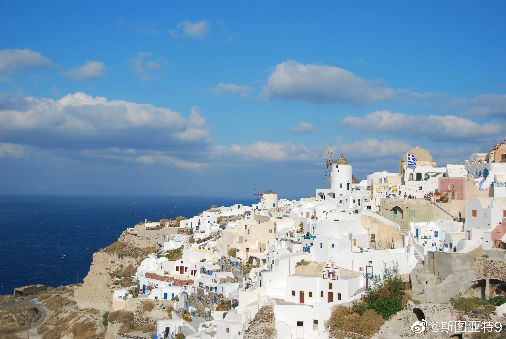

特朗普和亚历山大大帝的共同点——都喜欢把自己建的大楼或者城市用自己的名字命名。

斯图亚特9
2019-09-28
斯图亚特9
2019-09-28
看这篇文章  对不起，你朋友圈里的网红景点都是骗人的 让我想起了八年前去圣托里尼岛的时候。我们错误的选择了入冬后的11月底去，冷的瑟瑟发抖。而全Ori只有一家旅馆开门，一家饭馆开门。全村基本上一个人也看不到，除了饭馆见到服务员基本就没看到过人。满地的流浪猫流浪狗看到我们极其高兴，都跟着我们到处走。所以我每次看到说圣托里尼岛人挤人都觉得很困惑，我一直觉得是基本看不到人的地方。我印象中的圣托里尼岛就是这几张照片里这样的，而且更寂寞。
对不起，你朋友圈里的网红景点都是骗人的 让我想起了八年前去圣托里尼岛的时候。我们错误的选择了入冬后的11月底去，冷的瑟瑟发抖。而全Ori只有一家旅馆开门，一家饭馆开门。全村基本上一个人也看不到，除了饭馆见到服务员基本就没看到过人。满地的流浪猫流浪狗看到我们极其高兴，都跟着我们到处走。所以我每次看到说圣托里尼岛人挤人都觉得很困惑，我一直觉得是基本看不到人的地方。我印象中的圣托里尼岛就是这几张照片里这样的，而且更寂寞。
- 